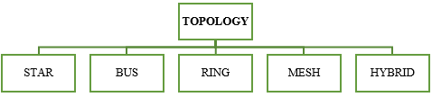
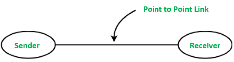
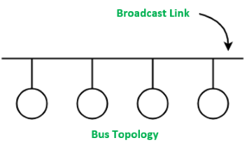
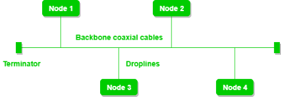
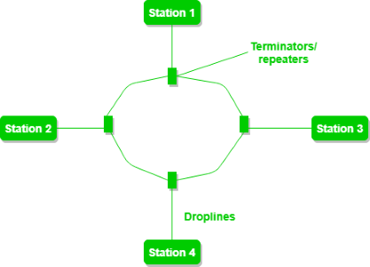
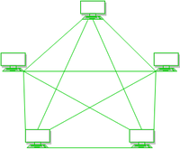
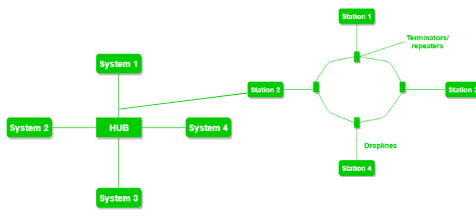

Introduction
In the present scenario, networking plays a crucial role in every individual’s and every organization’s day-to-day activities. But there has to be some specific models or guidelines that must be followed to connect one device to another. This logical or physical layout or configuration of a network is known as a network topology.
Definition:
A network topology is a substantial arrangement of a network in which all the nodes are connected with each other using network links or connecting lines. Apart from just describing how the nodes are interconnected, network topology also explains how the data is transferred in a network.

Fig 3: Network Topology Classification
Definition:
A network topology is a substantial arrangement of a network in which all the nodes are connected with each other using network links or connecting lines. Apart from just describing how the nodes are interconnected, network topology also explains how the data is transferred in a network.
Logical and Physical Network Topologies:
A logical network topology is a high-level representation of how two or more nodes are connected. A logical network topology describes or explains how signals act on a network and how the data is transmitted from one node to another at a very high level. On the other hand, a physical topology describes how nodes are physically connected to each other. The physical connection can be made using wires, wireless connectivity, networking components, and more.Importance of Network Topologies:
- Plays a significant role in the functioning of networks.
- Helps us better understand the networking concepts.
- Plays a crucial role in performance.
- Helps reduce the operational and maintenance costs such as cabling costs.
- A network topology is a factor in determining the media type to be used to cable a network.
- Error or fault detection is made easy using network topologies.
- Effective utilization of resources and networking components.
Links
A link is a communications channel that transfers data from one device to another.- Point-to-Point: A point-to-point connection provides a dedicated link between two devices.
 Fig 1: Point-to-Point Link
- Multipoint network (also called broadcast): the communication channel is shared by all the machines on the network; packets sent by any machine are received by all the others.
 Fig 2: Multipoint Link
Network Topology Classification:
Both physical and logical network topologies can be broadly classified into five basic types - Star, Bus, Ring, Mesh and Hybrid.- Star Topology
In a star topology, each device has a dedicated point-to-point link only to a central controller, usually called a hub/switch. All the data in a star topology flow through the central node before it reaches its destination. The central node manages and controls all data transfers and connectivity in a star topology. The central hub also acts as a repeater to make sure there is zero or minimal data loss during the transmissions. A star topology can be configured using a twisted pair, coaxial cable, or an optical fiber. There technically is no limit to how many computers can connect in a star topology. However, network performance can decrease as more computers are connected, resulting in slower network speeds.
Fig 4: Star Topology with 4 Nodes
Advantages of Star Topology:
- If N devices are connected to each other in a star topology, then the number of cables required to connect them is N. So, it is easy to set up.
- Each device requires just one port i.e. to attach to the central node.
- Failure of one node will not affect the entire network.
- Devices can be added, removed, reconfigured, or modified without disturbing the network.
- Less cabling is needed to configure star topology.
- Easy to troubleshoot.
Disadvantages of Star Topology:
- The entire network is dependent on the central node: If the node fails, then the whole network will be down.
- Expensive to install and use.
- Performance is solely based on the central node's configuration, power, and efficiency.
- Bus Topology
Bus topology refers to a network setup where nodes or devices are interconnected using a single cable. It is because of this setup why bus topology is often referred to as line topology or backbone.
Bus topology usually consists of two ends and signals travel from one end to another. Bus topology is unidirectional and data is transferred from one end to another in a single direction. Nodes are connected to the bus cable by drop lines and taps. A drop line is a connection running between the device and the main cable. A tap is a connector.
NOTE: If N devices are connected to each other in a bus topology, then the number of cables required to connect them is 1, known as backbone cable, and N drop lines are required.
 Fig 5: Bus Topology with 4 Nodes
Advantages of Bus Topology:
- Cost-effective.
- Less cable required to connect the nodes.
- Very easy to understand.
- Provides an easy feasibility to extend or to reduce a network.
- Terminators are required for both ends of the main cable.
Disadvantages of Bus Topology:
- Ideal only for small network setups.
- If the backbone (primary) cable fails, the entire network fails.
- Unidirectional.
- Transmission speeds are drastically reduced with the increased number of nodes.
- Ring Topology
In a ring topology, all devices are connected in a closed path configuration and one node in the network acts as a monitor, which essentially takes care of the configuration. This closed path can be in any form like circle, triangle, square or whatever else. In a ring topology, all the data packets are transmitted from one node to another in a circular manner and, therefore, for a data packet to reach one point to another it has to traverse through all the intermediate nodes. For large networks with more nodes connected in a ring, repeaters can be used to prevent data loss in these data transmissions.
 Fig 6: Ring Topology with 4 Nodes
Advantages of Ring Topology:
- Performs better than bus topology under heavy network loads.
- Point-to-point connectivity of the nodes makes it easy to identify and detect misconfigurations or faults.
- Orderly network flow.
- Cost effective to implement.
Disadvantages of Ring Topology:
- One malfunctioning node can collapse the whole network.
- Transmission line failure can take down the whole network.
- Communication delay is proportional to the number of nodes in a ring.
- Bandwidth is shared among all the devices in a network.
- Reconfiguring, adding, or removing nodes requires the network to shut down.
- Mesh Topology
Mesh topology is a widely used network model that has a point-to-point connection between each node in the network. Every node or a device in a mesh network connects to other nodes directly and in a non-hierarchical manner. In a mesh network, the network isn’t dependent on a single machine like the star topology and every node plays an active role in the relay of information.
Data transmission in a mesh topology is based on two important techniques:
- Routing: Every node in a mesh network can have a routing logic and transmission of data or information happens through that routing logic. This routing logic can be used to find the shortest distance to send some information from sender to receiver or the logic can be used to avoid using broken lines for data transmission.
- Flooding: In the case of flooding, the same data is transmitted to each node in the network. Therefore, no routing logic is required in case of flooding mesh networks. Loss of data is highly unlikely as every node will have the same data with them. This makes it robust and fault-tolerant. However, this also increases the load on the network.
 Fig 7: Mesh Topology with 5 Nodes
Advantages of Mesh Topology:
- Fully connected
- Robust
- Provides security and privacy.
- Any node failure won’t affect the network.
- Less load and collisions to dedicated lines.
- Isolation and fault-detection are easy.
Disadvantages of Mesh Topology:
- Cost of implementing and cost of cabling is high.
- Installation and reconfiguring is a typical task.
- Complex to understand.
- Hybrid Topology
When a network topology is formed by integrating two or more topologies together, this results in a hybrid topology. Hybrid topologies can be configured as per the company’s requirement. When configured properly, hybrid topologies can provide the best of all the network topologies. Hybrid topologies are easy to scale and expand. However, they might need higher costs and more operational efforts to configure and maintain. Fig 8: Hybrid Topology
Advantages of Hybrid Topology:
- Reliable
- Effective
- Flexible
- Scalable
Disadvantages of Hybrid Topology:
- Expensive to implement.
- Higher Complexity.
Cables
A cable is a thick wire, or a group of wires inside a rubber or plastic covering, which is used to carry electricity or electronic signals. There are different types of cables used such as:-- Cross Over Cable: An Ethernet crossover cable is a crossover cable for Ethernet used to connect computing devices together directly. It is most often used to connect two devices of the same type, e.g. two computers (via their network interface controllers) or two switches to each other.
- Coaxial Cable: It is a type of electrical cable consisting of an inner conductor surrounded by a concentric conducting shield, with the two separated by a dielectric (insulating material). Many coaxial cables also have a protective outer sheath or jacket. The term 'coaxial' refers to the inner conductor and the outer shield sharing a geometric axis. Intentionally crossed wiring in the crossover cable connects the transmit signals at one end to the receive signals at the other end.
- Fibre Optic Cable: It is, also known as an optical-fiber cable, is an assembly similar to an electrical cable, but containing one or more optical fibers that are used to carry light. The optical fiber elements are typically individually coated with plastic layers and contained in a protective tube suitable for the environment where the cable will be deployed. Different types of cable are used for different applications, for example, long distance telecommunication, or providing a high-speed data connection between different parts of a building.
- Rollover Cable: It is (also known as a Yost cable, Cisco cable, or a Console cable) a type of null-modem cable that is often used to connect a computer terminal to a router's console port. This cable is typically flat (and has a light blue color) to help distinguish it from other types of network cabling.
- Straight Cable: By contrast, patch cables or straight through cables are used to connect devices of different types, such as a computer to a network switch or Ethernet hub.